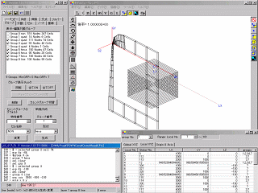

3次元リアルタイム磁場解析ソルバシステム『 Qm 』
3次元リアルタイム磁場解析ソルバシステム『 Qm 』 - 目次
- 概要
- 『 Qm 』について
- プリプロセッサ『 P 』
- 価格 / お問い合わせ
プリプロセッサ『 P 』
3次元リアルタイム磁場解析ソルバシステム『 Qm 』向けのポリゴンタイプ非構造3次元データ作成ツールです。
モデル作成者のスキルレベルに応じて、複雑なモデル作成が可能です。
形状データ作成以外の前提知識を必要としません。

特長
- 3次元モデラー
-
高精度を求められる3次元解析に対応したポリゴンタイプの非構造3次元モデラーです。
- 大規模モデル作成
- グループという独立性の高い小モデルを組み合わせることにより、大きなモデルが作成できます。
- undo/redo機能
- undo/redo機能をサポートしており、手戻りや元に戻すなどにより快適なモデリング作業が実現できます。
- 高精度モデリング
-
精度の高いデータが作成できます。
有効桁が多く必要な解析ソフトウェア向きです。 - 高汎用性
-
テキストエディタでスクリプトからデモ作成できます。このためバッチ処理も可能です。
データフォーマット等の仕様をオープンとしています。
XMLファイルの出力機能(オプション)を持っています。